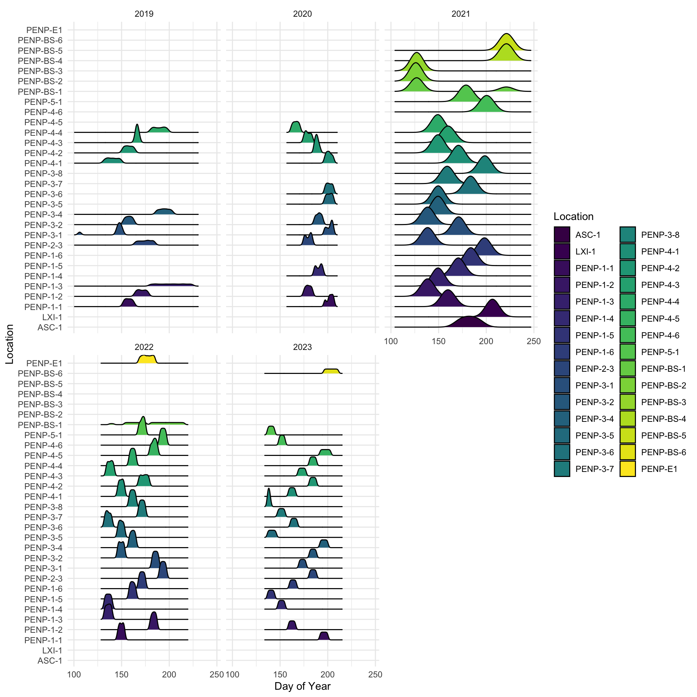

Report on the use of passive acoustic monitoring for evaluating ecological integrity in Prince Edward Island National Park

Abstract
Introduction
Human activities are known to be causing global declines in forest wildlife. Direct and indirect effects of habitat fragmentation and loss, climate change, and increased access to sensitive areas are pressures that affect forest biodiversity in managed areas.
In 2019, Prince Edward Island National Park engaged in a program to utilize autonomous recording units (ARUs) for passive acoustic monitoring (PAM) of wildlife to help utilize these technologies to report on biodiversity changes by the way of ecological integrity metrics.
Maintaining data integrity is of the utmost importance to ensure that data interoperability and sharing can be facilitated in the future. Therefore, inaugurating this program is the use of WildTrax, an online platform designed to allow users of environmental sensors to store, manage, process, share, and discover data from these sensors.
The general objectives of this report are to:
- Describe the data management and data processing procedures for the acoustic data collected from 2019 to 2023;
- Identify all audible species and the abundance of each species within each selected recording;
- Define simple methods and ecological integrity metrics robust enough to be applied to evaluate species presence, species richness at locations over time, and species occupancy over time;
- Provide recommendations for continued monitoring approaches;
- Contribute to evaluating the ecological integrity of forest ecosystems in Prince Edward Island National Park;
- Helping to facilitate data publication to the public, resource managers, academic institutions, and other resource agencies.
Methods
Data collection
Data were collected during the spring and summer seasons from 2019 to 2023. A total of 30 locations were surveyed over the five-year period: 21 locations as part of the forest songbird monitoring program (code: PENP-*), 6 for Bank Swallow Monitoring (code: PENP-BS-*), 2 locations deployed in First Nations communities (ASC-1,LXI-1), and one location for events (PENP-E1). Nine locations were surveyed each year, while the remaining locations were surveyed on rotation as best as possible. Details can be found in Table 1 (Table 1) and illustrated in Figure 1 (Figure 1).
ARUs were deployed at the beginning of the breeding season in April and May. These ARUs rotated through locations during the spring and summer until their final retrieval in July and August. At each location, the ARUs were set to record for 30 minutes continuously every hour for four hours, starting one hour before dawn and ending three hours after dawn. For Bank Swallow Monitoring locations, recordings were made every 5 minutes for a duration of 3 minutes each. On average, each ARU recorded for 11.27 +/- 8.03 days.
| Location | 2019 | 2020 | 2021 | 2022 | 2023 | Site |
|---|---|---|---|---|---|---|
| PENP-1-1 | 1 | 1 | 1 | 1 | 1 | Cavendish |
| PENP-1-2 | 1 | 1 | 1 | 1 | 1 | Cavendish |
| PENP-1-3 | 1 | 0 | 1 | 1 | 0 | Cavendish |
| PENP-2-3 | 1 | 1 | 1 | 1 | 1 | Brackley |
| PENP-3-1 | 1 | 1 | 1 | 1 | 1 | Dalvay |
| PENP-3-2 | 1 | 1 | 1 | 1 | 1 | Dalvay |
| PENP-3-4 | 1 | 0 | 1 | 1 | 1 | Dalvay |
| PENP-4-1 | 1 | 1 | 1 | 1 | 1 | Greenwich |
| PENP-4-2 | 1 | 1 | 1 | 1 | 1 | Greenwich |
| PENP-4-3 | 1 | 1 | 1 | 1 | 1 | Greenwich |
| PENP-4-4 | 1 | 1 | 1 | 1 | 1 | Greenwich |
| PENP-1-4 | 0 | 1 | 1 | 1 | 1 | Cavendish |
| PENP-3-5 | 0 | 1 | 1 | 1 | 1 | Dalvay |
| PENP-3-6 | 0 | 1 | 1 | 1 | 1 | Dalvay |
| ASC-1 | 0 | 0 | 1 | 0 | 0 | Communities |
| LXI-1 | 0 | 0 | 1 | 0 | 0 | Communities |
| PENP-1-5 | 0 | 0 | 1 | 1 | 1 | Cavendish |
| PENP-1-6 | 0 | 0 | 1 | 1 | 1 | Cavendish |
| PENP-3-7 | 0 | 0 | 1 | 1 | 1 | Dalvay |
| PENP-3-8 | 0 | 0 | 1 | 1 | 1 | Dalvay |
| PENP-4-6 | 0 | 0 | 1 | 1 | 1 | Greenwich |
| PENP-5-1 | 0 | 0 | 1 | 1 | 1 | Skmaqn |
| PENP-BS-1 | 0 | 0 | 1 | 0 | 0 | Bank Swallow Monitoring |
| PENP-BS-2 | 0 | 0 | 1 | 0 | 0 | Bank Swallow Monitoring |
| PENP-BS-3 | 0 | 0 | 1 | 0 | 0 | Bank Swallow Monitoring |
| PENP-BS-4 | 0 | 0 | 1 | 0 | 0 | Bank Swallow Monitoring |
| PENP-BS-5 | 0 | 0 | 1 | 0 | 0 | Bank Swallow Monitoring |
| PENP-4-5 | 0 | 0 | 0 | 1 | 1 | Greenwich |
| PENP-E1 | 0 | 0 | 0 | 1 | 0 | Skmaqn |
| PENP-BS-6 | 0 | 0 | 0 | 0 | 1 | Bank Swallow Monitoring |
Data management
A total of 10078 recordings were collected between 2019 - 2023 (see Figure 3). From 2019 - 2021, data were transferred via hard drive to the University of Alberta in Edmonton, where they are redundantly stored on a server known as Cirrus. The recordings were standardized to ensure adherence to the naming convention of LOCATION_DATETIME, such as PENP-1-1_20230625_053500.wav. The remaining recordings (2022 - 2023) were directly uploaded to WildTrax by Parks Canada staff and can be downloaded from the platform’s Recording tab, accessible under Manage > Download list of recordings (see Figure 2).


Community Data Processing
The principal goal for data processing was to describe the acoustic community of species heard on specific recordings. To ensure balanced replication, for each location and year surveyed, four randomly selected recordings were processed for 3-minutes between the hours of 4:00 AM - 7:59 AM and four separate dates. Four recordings will ensure that we have the minimum number of samples for a simple occupancy analysis. Tags are made in a count-removal framework, only tagging the time of first detection of each individual heard on the recordings. In case a species was overly abundant a TMTT (‘too many to tag’) flag was used (see ?@tbl-tmtt).
Amphibian abundance was estimated at the time of first detection using the North American Amphibian Monitoring Program with abundance of species being estimated on the scale of “calling intensity index” 1 - 3. Mammals such as Red Squirrel, were also noted on the recordings.
After the data are processed in WildTrax, the wildRtrax package is use to download the data into a standard format prepared for analysis.
To ensure balanced replication, each location was surveyed at minmum for 4 recordings x 3 minutes at dawn (see ?@tbl-loc-repl). We also verified everything that was tagged (see Table 2).
?(caption)
| Tag is verified | Count | Proportion |
|---|---|---|
| 159 | 1.56 | |
| f | 2918 | 28.54 |
| t | 7146 | 69.90 |
Visual scanning
Visual scanning is the concept of visually examining recordings en masse in order to find the signal in question in audio recordings. It has been a well-proven method for detecting many different taxa (Cameron et al. 2020, Garland et al. 2020) with comparable biological metrics to other traditional methods. Visual scanning allows a user to use frequency-limited or time-limited spectrograms and scan lots of them visually much fatser than listneing to the audio. These changes are easily made by adjusting project setitngs in WildTrax. Visual scanning for Bank Swallow was conducted at each PENP-BS-* location. A total of 17 recordings. Tags were made at the time of first detection in each minute interval.
Automated recognition
Automated recongition is a well-known process to help detect rare and elusive species, as well as species that may have low detectability in large datasets. We constructed a recognizer for EAWP and used three previously constructed Wildlife Acoustics Songscope recognizer for OSFL, RUBL and CAWA. Hits were uploaded to WildTrax via the wt_songscope_tags function in wildRtrax.
wt_songscope_tags()Results
Avian species
?(caption)
Species richness

For each year

Species occupancy
We chose locations that had at least 4 dawn visits and that were visited in all five years. We then chose only forest obligate species. We modeled a multi-season occupancy model following Royle et al. 2021 incorporating both colonization () and extinction parameters () of species occupancy starting with the ‘first year’s occupancy’ as a reference state. The only year covariate that was also used was the impact of Fiona on the final year (2023) of data. Site covariates included distance to ocean edge and proportion of forested area around the ARU. Observation covariates were day of year, hour, observer and the quadratic for year and hour. Although method was different between 2019 (1SPM) and other years (2020 - 2023), only time to first detection of individuals in the 1SPM recordings were used to match the 1SPT method. We then predict the models and chose the best model using AIC.
guilds <- read_csv("bird_guilds.csv")Rows: 110 Columns: 8
── Column specification ────────────────────────────────────────────────────────
Delimiter: ","
chr (8): species_common_name, general_type, migration, feeding, breeding_sub...
ℹ Use `spec()` to retrieve the full column specification for this data.
ℹ Specify the column types or set `show_col_types = FALSE` to quiet this message.
Downloading: 8.2 kB
Downloading: 8.2 kB
Downloading: 16 kB
Downloading: 16 kB
Downloading: 25 kB
Downloading: 25 kB
Downloading: 41 kB
Downloading: 41 kB
Downloading: 41 kB
Downloading: 41 kB
Downloading: 57 kB
Downloading: 57 kB
Downloading: 57 kB
Downloading: 57 kB
Downloading: 65 kB
Downloading: 65 kB
Downloading: 74 kB
Downloading: 74 kB
Downloading: 90 kB
Downloading: 90 kB
Downloading: 90 kB
Downloading: 90 kB
Downloading: 98 kB
Downloading: 98 kB
Downloading: 110 kB
Downloading: 110 kB
Downloading: 110 kB
Downloading: 110 kB
Downloading: 120 kB
Downloading: 120 kB
Downloading: 130 kB
Downloading: 130 kB
Downloading: 130 kB
Downloading: 130 kB
Downloading: 140 kB
Downloading: 140 kB
Downloading: 150 kB
Downloading: 150 kB
Downloading: 160 kB
Downloading: 160 kB
Downloading: 160 kB
Downloading: 160 kB
Downloading: 170 kB
Downloading: 170 kB
Downloading: 200 kB
Downloading: 200 kB
Downloading: 220 kB
Downloading: 220 kB
Downloading: 230 kB
Downloading: 230 kB
Downloading: 280 kB
Downloading: 280 kB
Downloading: 280 kB
Downloading: 280 kB
Downloading: 310 kB
Downloading: 310 kB
Downloading: 350 kB
Downloading: 350 kB
Downloading: 390 kB
Downloading: 390 kB
Downloading: 430 kB
Downloading: 430 kB
Downloading: 490 kB
Downloading: 490 kB
Downloading: 500 kB
Downloading: 500 kB
Downloading: 510 kB
Downloading: 510 kB
Downloading: 540 kB
Downloading: 540 kB
Downloading: 570 kB
Downloading: 570 kB
Downloading: 570 kB
Downloading: 570 kB
Downloading: 600 kB
Downloading: 600 kB
Downloading: 620 kB
Downloading: 620 kB
Downloading: 630 kB
Downloading: 630 kB
Downloading: 630 kB
Downloading: 630 kB 
Species-at-risk
Visual scanning
Amphibians